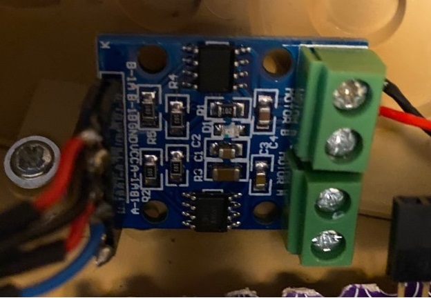

H-Bridge for Turret
Requirements
- The HBridge shall be powered by 5V voltage regulator
- The HBridge shall control the left/right motion of the turret via 2 PWM outputs from the nano microcontroller
- The HBridge shall control the up/down motion via 1 PWM output (the other input is grounded)
- The HBridge shall connect its first output to the red/black wires of the turret
- The HBridge shall connect its second output to the green? wire of the turret
Discussion
The power drain of this device is small because the size of the motors driving the turret left/right and up/down are small.

Circuit Diagram